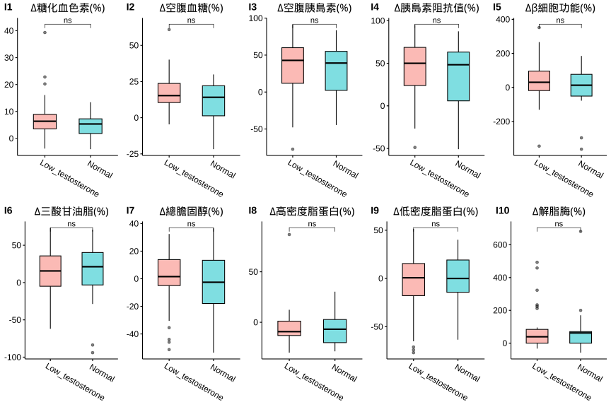

1.8 分層分析-3: 尿酸(Serum Uric Acid)
1.8.1 相關分析(Correlation Analysis)



1.8.2 Cutoff-1 (♂7.6/♀6.6)
| No change | Decrease | Increase | Normal>High | High>Normal | High>High | Sum | |
|---|---|---|---|---|---|---|---|
| female | 73 | 385 | 104 | 22 | 51 | 18 | 653 |
| male | 11 | 56 | 13 | 4 | 25 | 13 | 122 |
| Sum | 84 | 441 | 117 | 26 | 76 | 31 | 775 |
|
Cutoffs: Male: 7.6 (mg/dL) Female: 6.6(mg/dL) |


成效(Effectiveness)


成效(%)-Blood

| No change | Decrease | Increase | Normal>High | High>Normal | High>High | No change | Decrease | Increase | Normal>High | High>Normal | High>High | |
|---|---|---|---|---|---|---|---|---|---|---|---|---|
| 體重(T0) | 72.02 ± 1.35 | 71.98 ± 0.66 | 70.15 ± 1.2 | 76.05 ± 2.87 | 81.27 ± 1.9 | 84.68 ± 3.43 | 98.94 ± 8.18 | 92.9 ± 1.83 | 86.12 ± 3.88 | 95.03 ± 16.73 | 100.4 ± 3.31 | 109.38 ± 6.41 |
| BMI(T0) | 28.27 ± 0.54 | 27.75 ± 0.24 | 27.17 ± 0.38 | 29.26 ± 0.85 | 31.57 ± 0.7 | 32.61 ± 1.44 | 33.53 ± 3.09 | 30.97 ± 0.57 | 28.61 ± 1.2 | 32.28 ± 4.88 | 32.94 ± 0.89 | 35.75 ± 2.04 |
| 體脂重(T0) | 29.67 ± 0.94 | 28.52 ± 0.47 | 27.49 ± 0.78 | 32.8 ± 2.04 | 35.6 ± 1.33 | 37.76 ± 2.71 | 36.65 ± 6.17 | 30.3 ± 1.14 | 26.18 ± 2.63 | 33.25 ± 10.82 | 36.48 ± 2.48 | 43.29 ± 4.84 |
| 體脂率(T0) | 40.65 ± 0.69 | 38.87 ± 0.32 | 38.61 ± 0.55 | 42.43 ± 1.08 | 43.25 ± 0.7 | 43.79 ± 1.56 | 35.09 ± 2.63 | 32.23 ± 0.7 | 29.88 ± 2.05 | 32.98 ± 4.79 | 35.53 ± 1.34 | 38.28 ± 2.29 |
| 骨骼肌質量指數(T0) | 6.74 ± 0.08 | 6.85 ± 0.04 | 6.72 ± 0.07 | 6.86 ± 0.12 | 7.29 ± 0.11 | 7.4 ± 0.18 | 8.85 ± 0.35 | 8.88 ± 0.1 | 8.47 ± 0.25 | 8.95 ± 0.81 | 8.95 ± 0.11 | 9.18 ± 0.24 |
| 骨骼肌率(T0) | 32.24 ± 0.37 | 33.32 ± 0.17 | 33.32 ± 0.3 | 31.41 ± 0.57 | 31.09 ± 0.38 | 30.95 ± 0.88 | 36.53 ± 1.45 | 38.37 ± 0.41 | 39.48 ± 1.23 | 37.55 ± 2.59 | 36.47 ± 0.77 | 34.98 ± 1.31 |
| 內臟脂肪面積(T0) | 149.17 ± 5.41 | 141.28 ± 2.25 | 138.88 ± 4.06 | 166.97 ± 9.9 | 175.26 ± 5.05 | 191.79 ± 10.08 | 147.06 ± 15.52 | 127.39 ± 5.71 | 106.84 ± 12.4 | 96.5 ± 13.21 | 146.82 ± 10.11 | 180.26 ± 20.65 |
| 腰圍(T0) | 92.65 ± 1.21 | 91.97 ± 0.59 | 90.55 ± 1.02 | 97.55 ± 2.77 | 100.48 ± 1.5 | 103.34 ± 2.97 | 108.99 ± 5.43 | 104.45 ± 1.44 | 97.36 ± 3.26 | 104.25 ± 12.27 | 113.92 ± 3.29 | 118.12 ± 5.11 |
| 除脂體重(T0) | 42.35 ± 0.62 | 43.47 ± 0.28 | 42.66 ± 0.57 | 43.25 ± 1 | 45.67 ± 0.77 | 46.92 ± 1.27 | 62.28 ± 2.14 | 62.59 ± 1.02 | 59.94 ± 2.23 | 61.78 ± 7.27 | 63.92 ± 1.31 | 66.09 ± 2.32 |
| 基礎代謝率(T0) | 1284.88 ± 13.48 | 1308.87 ± 5.98 | 1291.61 ± 12.32 | 1304.23 ± 21.47 | 1356.39 ± 16.66 | 1383.33 ± 27.58 | 1715.55 ± 46.26 | 1722.02 ± 21.94 | 1664.62 ± 47.98 | 1704.25 ± 156.92 | 1750.68 ± 28.35 | 1797.62 ± 50.09 |
| 糖化血色素(T0) | 5.5 ± 0.04 | 5.46 ± 0.02 | 5.47 ± 0.05 | 5.55 ± 0.11 | 5.69 ± 0.06 | 5.59 ± 0.12 | 5.96 ± 0.17 | 5.7 ± 0.06 | 5.96 ± 0.21 | 5.95 ± 0.42 | 5.69 ± 0.08 | 5.97 ± 0.29 |
| 空腹血糖(T0) | 85.04 ± 1.15 | 85.39 ± 0.48 | 85.94 ± 1.52 | 86.36 ± 2.88 | 87.63 ± 1.81 | 84.72 ± 2.24 | 93.45 ± 2.94 | 89.66 ± 1.6 | 98.92 ± 9.83 | 94 ± 11.21 | 88.84 ± 2.15 | 92.08 ± 4.67 |
| 空腹胰島素(T0) | 11.55 ± 0.8 | 11.4 ± 0.4 | 10.27 ± 0.55 | 15.95 ± 2.54 | 17.28 ± 1.72 | 23.1 ± 5.46 | 20.31 ± 4.16 | 16.51 ± 1.5 | 15.99 ± 2.15 | 17.63 ± 10.55 | 21.49 ± 2.7 | 22.66 ± 3.26 |
| 胰島素阻抗值(T0) | 2.47 ± 0.19 | 2.55 ± 0.13 | 2.2 ± 0.12 | 3.45 ± 0.57 | 3.79 ± 0.37 | 4.97 ± 1.19 | 4.68 ± 0.92 | 3.71 ± 0.34 | 4.31 ± 1.14 | 4.9 ± 3.48 | 4.87 ± 0.73 | 5.3 ± 0.87 |
| β細胞功能(T0) | 194.39 ± 18.61 | 210.67 ± 10.91 | 253.44 ± 63.25 | 276.19 ± 45.59 | 281.71 ± 43.74 | 385.81 ± 80.26 | 260.02 ± 64.96 | 246.24 ± 32.53 | 196.67 ± 25.08 | 185.02 ± 64.83 | 338.74 ± 58.85 | 352.61 ± 54.99 |
| 三酸甘油脂(T0) | 102.82 ± 5.08 | 106.35 ± 2.93 | 92.14 ± 4.37 | 96.14 ± 10.76 | 153.86 ± 12.13 | 180.61 ± 52.76 | 147.64 ± 22.4 | 140.95 ± 9.45 | 174.31 ± 29.5 | 118.75 ± 20.54 | 180.72 ± 20.64 | 142.92 ± 26.87 |
| 總膽固醇(T0) | 200.38 ± 4.02 | 198.19 ± 1.93 | 194.55 ± 3.51 | 202.91 ± 9.71 | 196.16 ± 5.64 | 194.28 ± 8.16 | 173.82 ± 8.95 | 195.25 ± 4.68 | 186 ± 10.4 | 195.5 ± 4.52 | 196.52 ± 8.35 | 197.38 ± 16.75 |
| 高密度脂蛋白(T0) | 57.1 ± 1.63 | 56.52 ± 0.66 | 59.29 ± 1.31 | 57.24 ± 3.28 | 50.04 ± 1.31 | 45.23 ± 2.57 | 42.68 ± 1.44 | 46.07 ± 0.9 | 45.98 ± 2.78 | 46.7 ± 4.12 | 41.62 ± 1.63 | 45.67 ± 4.43 |
| 低密度脂蛋白(T0) | 124.42 ± 3.49 | 123.72 ± 1.69 | 118.29 ± 2.95 | 131.59 ± 8.06 | 123.53 ± 5.05 | 125.61 ± 8.38 | 115 ± 8.85 | 129.11 ± 3.73 | 116.77 ± 8.9 | 132 ± 5.28 | 128.48 ± 7.66 | 128.38 ± 14.82 |
| 尿酸(T0) | 4.87 ± 0.1 | 5.07 ± 0.04 | 4.33 ± 0.08 | 5.55 ± 0.15 | 7.32 ± 0.11 | 7.48 ± 0.17 | 5.69 ± 0.32 | 6.25 ± 0.11 | 5.14 ± 0.35 | 6.65 ± 0.41 | 8.32 ± 0.14 | 9.1 ± 0.41 |
| 澱粉脢(T0) | 43.62 ± 1.46 | 45.78 ± 0.74 | 45.75 ± 1.56 | 49.18 ± 3.56 | 44.1 ± 2.21 | 39.22 ± 2.53 | 40.73 ± 4.15 | 43.25 ± 2.11 | 44.92 ± 3.2 | 43 ± 4.06 | 39.56 ± 2.58 | 39.23 ± 4.72 |
| 解脂脢(T0) | 25.88 ± 2.24 | 24.02 ± 0.69 | 24.21 ± 1.03 | 24.18 ± 2.45 | 27.18 ± 2.49 | 27.83 ± 3.34 | 27.55 ± 3.5 | 24.86 ± 2.32 | 28.69 ± 5.81 | 24 ± 5.05 | 28.56 ± 4.22 | 20.69 ± 3.44 |
| 體重(T1) | 67.09 ± 1.32 | 67.57 ± 0.63 | 65.03 ± 1.14 | 69.22 ± 2.57 | 76.06 ± 1.88 | 78.43 ± 3.23 | 92.22 ± 8.09 | 86.21 ± 1.72 | 79.92 ± 3.54 | 85.12 ± 14.87 | 94.19 ± 3.31 | 101.79 ± 6.43 |
| BMI(T1) | 26.06 ± 0.49 | 26.04 ± 0.23 | 25.17 ± 0.35 | 26.63 ± 0.74 | 29.54 ± 0.69 | 30.2 ± 1.35 | 31.27 ± 3.03 | 28.74 ± 0.53 | 26.58 ± 1.16 | 28.92 ± 4.33 | 30.9 ± 0.91 | 33.27 ± 2.06 |
| 體脂重(T1) | 25.95 ± 0.91 | 25.54 ± 0.45 | 24.07 ± 0.73 | 28.71 ± 1.95 | 32.24 ± 1.36 | 33.66 ± 2.5 | 32.01 ± 6.02 | 25.61 ± 1.11 | 22.03 ± 2.68 | 25.82 ± 9.33 | 32.22 ± 2.57 | 37.25 ± 4.9 |
| 體脂率(T1) | 38 ± 0.7 | 36.97 ± 0.34 | 36.4 ± 0.56 | 40.69 ± 1.31 | 41.65 ± 0.82 | 42.12 ± 1.62 | 32.54 ± 2.9 | 29.21 ± 0.79 | 26.82 ± 2.33 | 27.9 ± 5.19 | 33.2 ± 1.48 | 34.95 ± 2.59 |
| 骨骼肌質量指數(T1) | 6.48 ± 0.08 | 6.61 ± 0.04 | 6.45 ± 0.07 | 6.44 ± 0.11 | 6.99 ± 0.1 | 7.11 ± 0.18 | 8.69 ± 0.4 | 8.57 ± 0.1 | 8.19 ± 0.21 | 8.55 ± 0.7 | 8.66 ± 0.12 | 8.96 ± 0.25 |
| 骨骼肌率(T1) | 33.54 ± 0.37 | 34.21 ± 0.18 | 34.33 ± 0.3 | 32.04 ± 0.69 | 31.82 ± 0.44 | 31.7 ± 0.89 | 37.9 ± 1.61 | 39.95 ± 0.45 | 41.03 ± 1.42 | 40.4 ± 2.8 | 37.73 ± 0.85 | 36.69 ± 1.46 |
| 內臟脂肪面積(T1) | 129.32 ± 5.25 | 125.38 ± 2.26 | 120.09 ± 3.89 | 148.58 ± 9.69 | 160.91 ± 5.35 | 161.97 ± 12.11 | 121.12 ± 13.47 | 105.13 ± 5.25 | 94.6 ± 11.38 | 108.67 ± 40.75 | 130.35 ± 10.97 | 133.37 ± 19.91 |
| 腰圍(T1) | 88.13 ± 1.23 | 87.56 ± 0.57 | 85.36 ± 1 | 90.52 ± 2.62 | 95.43 ± 1.52 | 97.76 ± 3.04 | 100.58 ± 4.95 | 97.58 ± 1.45 | 90.78 ± 3.38 | 95.4 ± 11.57 | 108.07 ± 3.42 | 110.3 ± 5.43 |
| 除脂體重(T1) | 41.14 ± 0.58 | 42.02 ± 0.27 | 40.96 ± 0.55 | 40.5 ± 0.87 | 43.82 ± 0.72 | 44.77 ± 1.28 | 60.21 ± 2.29 | 60.59 ± 0.95 | 57.88 ± 1.91 | 59.3 ± 6.63 | 61.98 ± 1.21 | 64.55 ± 2.28 |
| 基礎代謝率(T1) | 1258.79 ± 12.45 | 1277.65 ± 5.78 | 1254.84 ± 11.88 | 1244.77 ± 18.77 | 1316.35 ± 15.62 | 1337.06 ± 27.7 | 1670.73 ± 49.54 | 1678.75 ± 20.56 | 1620.31 ± 41.31 | 1651 ± 143.05 | 1708.68 ± 26.02 | 1764.08 ± 49.44 |
| 糖化血色素(T1) | 5.23 ± 0.04 | 5.23 ± 0.02 | 5.17 ± 0.03 | 5.17 ± 0.07 | 5.41 ± 0.05 | 5.27 ± 0.08 | 5.6 ± 0.13 | 5.37 ± 0.05 | 5.52 ± 0.11 | 5.28 ± 0.18 | 5.4 ± 0.07 | 5.4 ± 0.09 |
| 空腹血糖(T1) | 76.92 ± 1.18 | 78.64 ± 0.39 | 73.34 ± 1.07 | 68.95 ± 1.71 | 80.04 ± 1.07 | 73 ± 2.48 | 82.45 ± 3.48 | 79.16 ± 0.98 | 75.54 ± 2.81 | 69.5 ± 6.76 | 80.68 ± 1.86 | 77.85 ± 3.23 |
| 空腹胰島素(T1) | 9 ± 0.74 | 9.51 ± 0.34 | 6.82 ± 0.55 | 9.38 ± 1.64 | 13.67 ± 1.16 | 16.85 ± 3.71 | 13.75 ± 2.87 | 11.43 ± 1.09 | 9.02 ± 2.31 | 6.24 ± 3.4 | 19.23 ± 3.93 | 13.77 ± 3.07 |
| 胰島素阻抗值(T1) | 1.79 ± 0.16 | 1.89 ± 0.07 | 1.3 ± 0.12 | 1.65 ± 0.31 | 2.76 ± 0.24 | 3.3 ± 0.81 | 2.9 ± 0.66 | 2.26 ± 0.22 | 1.82 ± 0.49 | 1.2 ± 0.71 | 4.05 ± 0.98 | 2.67 ± 0.59 |
| β細胞功能(T1) | 338.53 ± 64.93 | 235.2 ± 17.43 | 234.14 ± 54.63 | 792.25 ± 318.77 | 347.69 ± 72.6 | 752.47 ± 292.08 | 300.25 ± 53.81 | 239.37 ± 54.28 | 281.78 ± 67.08 | 12.78 ± 114.44 | 344.11 ± 73.01 | 458.13 ± 106.9 |
| 三酸甘油脂(T1) | 98.96 ± 5.3 | 90.97 ± 2.64 | 89.14 ± 2.99 | 106.27 ± 6.81 | 111.37 ± 6.01 | 113.83 ± 8.33 | 117.73 ± 15.7 | 108.75 ± 6.78 | 134 ± 13.86 | 104 ± 9.34 | 150.04 ± 18.18 | 133.31 ± 14.82 |
| 總膽固醇(T1) | 210.9 ± 5.79 | 199.89 ± 2.14 | 201.66 ± 4.84 | 210.5 ± 13.24 | 189.25 ± 5.83 | 185.78 ± 8.51 | 161.27 ± 8.81 | 192 ± 6.25 | 202.77 ± 15.55 | 212 ± 20.26 | 182.96 ± 6.99 | 201.69 ± 17.97 |
| 高密度脂蛋白(T1) | 50.85 ± 1.44 | 51.68 ± 0.6 | 50.62 ± 1.19 | 43.17 ± 2.49 | 46.71 ± 1.12 | 40.72 ± 2.51 | 38.21 ± 1.46 | 42.48 ± 1.08 | 43.78 ± 3.58 | 44.67 ± 4.17 | 38.87 ± 1.59 | 38.22 ± 3.35 |
| 低密度脂蛋白(T1) | 137.19 ± 5.05 | 128.99 ± 1.83 | 129.52 ± 3.88 | 144.32 ± 11.69 | 121.71 ± 5.13 | 123.5 ± 8.05 | 106.55 ± 7.76 | 128.32 ± 5.01 | 133.69 ± 14.87 | 147 ± 18.06 | 121.44 ± 6.54 | 136.85 ± 14.59 |
| 尿酸(T1) | 4.87 ± 0.1 | 4 ± 0.04 | 5.14 ± 0.09 | 7.49 ± 0.17 | 5.15 ± 0.11 | 7.57 ± 0.27 | 5.74 ± 0.34 | 4.81 ± 0.1 | 6.13 ± 0.34 | 8.28 ± 0.38 | 6.61 ± 0.13 | 8.92 ± 0.31 |
| 澱粉脢(T1) | 44.37 ± 1.58 | 48.11 ± 0.84 | 45.38 ± 1.64 | 46.5 ± 3.64 | 47.24 ± 2.35 | 40.5 ± 2.25 | 41.64 ± 3.82 | 45.61 ± 2.85 | 45.85 ± 4.24 | 43.25 ± 6.17 | 40.24 ± 2.26 | 39.69 ± 4.68 |
| 解脂脢(T1) | 36.44 ± 2.25 | 36.15 ± 1.14 | 35.55 ± 1.72 | 39.68 ± 5.09 | 40.73 ± 3.97 | 35.94 ± 3.47 | 28.36 ± 1.87 | 43.21 ± 5.94 | 35.92 ± 6.18 | 33.5 ± 12.12 | 35.8 ± 2.89 | 27.92 ± 4.42 |
| 年齡 | 39.45 ± 1.38 | 38.81 ± 0.5 | 39.04 ± 0.87 | 37.18 ± 2.62 | 44.02 ± 1.87 | 37 ± 1.6 | 42 ± 4.18 | 40.98 ± 1.59 | 41.15 ± 3.82 | 34 ± 3.49 | 38.12 ± 2.29 | 32.77 ± 3.13 |
| 飲食紀錄完成率(%) | 78.26 ± 3.11 | 70.64 ± 1.56 | 81.42 ± 2.31 | 84.94 ± 3.94 | 66.42 ± 4.4 | 86.84 ± 6.12 | 58.85 ± 13.21 | 70.34 ± 3.96 | 69.77 ± 10.23 | 92.11 ± 2.21 | 61.47 ± 6.67 | 67.19 ± 7.72 |
| 紀錄數量 | 196.28 ± 15.5 | 182.02 ± 6.77 | 222.87 ± 18.04 | 271.69 ± 46.61 | 157.99 ± 16.42 | 242.73 ± 33.71 | 135.07 ± 44.77 | 194.69 ± 21.73 | 201.62 ± 54.89 | 151.17 ± 22.42 | 164.95 ± 48.49 | 113.87 ± 25.89 |
| 上傳照片張數 | 177.4 ± 11.77 | 148.92 ± 5.34 | 182.98 ± 10.95 | 182.68 ± 19.29 | 134.8 ± 13.29 | 180.92 ± 25.3 | 109.86 ± 27.12 | 153.97 ± 16.64 | 204.5 ± 43.76 | 171.88 ± 10.01 | 154.74 ± 30.63 | 116.09 ± 24.12 |
| 碳水攝取率(E%) | 17.68 ± 0.77 | 20.19 ± 0.36 | 17.18 ± 0.54 | 15.36 ± 1.04 | 19.16 ± 0.91 | 14.98 ± 1.7 | 21.44 ± 3.21 | 18.79 ± 0.91 | 17.51 ± 2.24 | 14.64 ± 2.56 | 19.91 ± 1.59 | 14.08 ± 1.36 |
| 蛋白攝取率(E%) | 28 ± 0.31 | 26.94 ± 0.17 | 27.47 ± 0.25 | 28.05 ± 0.41 | 26.86 ± 0.32 | 28.95 ± 0.64 | 27.26 ± 1.22 | 27.6 ± 0.38 | 27.43 ± 0.71 | 29.81 ± 0.74 | 26.86 ± 0.68 | 28.9 ± 0.98 |
| 脂肪攝取率(E%) | 54.32 ± 0.6 | 52.87 ± 0.27 | 55.35 ± 0.43 | 56.59 ± 0.97 | 53.98 ± 0.74 | 56.06 ± 1.25 | 51.3 ± 2.25 | 53.61 ± 0.68 | 55.06 ± 1.67 | 55.55 ± 2.76 | 53.23 ± 1.14 | 57.01 ± 0.93 |
| 總攝取熱量(日) | 792.95 ± 37 | 715.37 ± 17.83 | 816.5 ± 27.56 | 867.1 ± 54.39 | 690 ± 50.24 | 872.88 ± 65.7 | 723.1 ± 168.47 | 811.13 ± 53.97 | 789.12 ± 131.15 | 873.93 ± 94.76 | 706.36 ± 90.37 | 747.84 ± 88.32 |
| 綠燈率 | 84.72 ± 1.73 | 79.45 ± 0.87 | 83.97 ± 1.57 | 90.94 ± 1.77 | 80.37 ± 1.98 | 86.21 ± 4.24 | 70.93 ± 8.76 | 79.95 ± 2.33 | 85.4 ± 3.62 | 86.9 ± 2.22 | 76.34 ± 4.7 | 84.83 ± 3.83 |
| 黃燈率 | 13.25 ± 1.46 | 17.93 ± 0.79 | 14.43 ± 1.41 | 8.05 ± 1.59 | 15.22 ± 1.62 | 12.33 ± 3.97 | 25.65 ± 7.64 | 17.72 ± 2.08 | 13.9 ± 3.29 | 13.1 ± 2.22 | 18.66 ± 3.86 | 14.17 ± 3.59 |
| 紅燈率 | 2.03 ± 0.48 | 2.62 ± 0.25 | 1.6 ± 0.35 | 1.01 ± 0.49 | 4.41 ± 1.4 | 1.46 ± 0.49 | 3.42 ± 1.81 | 2.33 ± 0.7 | 0.7 ± 0.4 | 0 ± 0 | 5 ± 1.87 | 1 ± 0.65 |
| 水果(日) | 0.06 ± 0.01 | 0.06 ± 0.01 | 0.06 ± 0.01 | 0.05 ± 0.02 | 0.07 ± 0.02 | 0.01 ± 0 | 0.03 ± 0.01 | 0.04 ± 0.01 | 0.02 ± 0.01 | 0.02 ± 0.01 | 0.05 ± 0.03 | 0.03 ± 0.01 |
| 蔬菜(日) | 2.74 ± 0.17 | 2.31 ± 0.07 | 2.97 ± 0.13 | 3.04 ± 0.24 | 2.3 ± 0.2 | 3.1 ± 0.3 | 2.09 ± 0.55 | 2.38 ± 0.2 | 2.82 ± 0.53 | 3.19 ± 0.62 | 2.21 ± 0.33 | 2.35 ± 0.34 |
| 全穀雜糧(日) | 1.12 ± 0.08 | 1.35 ± 0.05 | 1.07 ± 0.06 | 1.01 ± 0.14 | 1.13 ± 0.11 | 0.82 ± 0.14 | 1.22 ± 0.3 | 1.51 ± 0.15 | 0.95 ± 0.19 | 0.9 ± 0.14 | 1.22 ± 0.18 | 0.83 ± 0.15 |
| 蛋豆魚肉(日) | 7.15 ± 0.35 | 6.09 ± 0.16 | 7.25 ± 0.27 | 7.81 ± 0.51 | 5.9 ± 0.46 | 8.37 ± 0.69 | 6.72 ± 1.59 | 7.18 ± 0.49 | 7.25 ± 1.29 | 8.6 ± 1.1 | 6.15 ± 0.87 | 7.04 ± 0.91 |
| 乳品(日) | 0.04 ± 0.01 | 0.05 ± 0 | 0.04 ± 0.01 | 0.03 ± 0.01 | 0.05 ± 0.01 | 0.03 ± 0.01 | 0.03 ± 0.01 | 0.03 ± 0.01 | 0.04 ± 0.02 | 0.01 ± 0.01 | 0.04 ± 0.01 | 0.02 ± 0.01 |
| 油脂(日) | 2.9 ± 0.16 | 2.74 ± 0.07 | 3.23 ± 0.12 | 3.28 ± 0.22 | 2.65 ± 0.21 | 3.31 ± 0.33 | 2.51 ± 0.62 | 2.98 ± 0.21 | 2.88 ± 0.49 | 2.99 ± 0.5 | 2.59 ± 0.37 | 2.73 ± 0.36 |
| ∆體重 | 4.93 ± 0.26 | 4.42 ± 0.11 | 5.12 ± 0.24 | 6.83 ± 0.64 | 5.21 ± 0.28 | 6.25 ± 0.63 | 6.72 ± 0.95 | 6.69 ± 0.4 | 6.21 ± 1.13 | 9.9 ± 2.36 | 6.21 ± 0.65 | 7.59 ± 0.75 |
| ∆BMI | 2.21 ± 0.31 | 1.71 ± 0.04 | 2 ± 0.09 | 2.63 ± 0.25 | 2.02 ± 0.11 | 2.41 ± 0.24 | 2.26 ± 0.33 | 2.23 ± 0.14 | 2.04 ± 0.38 | 3.37 ± 0.73 | 2.04 ± 0.2 | 2.48 ± 0.25 |
| ∆體脂重 | 3.72 ± 0.21 | 2.98 ± 0.09 | 3.42 ± 0.21 | 4.09 ± 0.41 | 3.36 ± 0.22 | 4.11 ± 0.46 | 4.65 ± 0.57 | 4.69 ± 0.33 | 4.15 ± 0.66 | 7.43 ± 1.66 | 4.26 ± 0.54 | 6.05 ± 0.75 |
| ∆體脂率 | 2.65 ± 0.27 | 1.9 ± 0.1 | 2.21 ± 0.21 | 1.74 ± 0.42 | 1.6 ± 0.24 | 1.68 ± 0.28 | 2.55 ± 0.48 | 3.02 ± 0.31 | 3.06 ± 0.53 | 5.08 ± 1.13 | 2.32 ± 0.39 | 3.32 ± 0.64 |
| ∆骨骼肌質量指數 | 0.26 ± 0.03 | 0.24 ± 0.01 | 0.27 ± 0.02 | 0.42 ± 0.06 | 0.3 ± 0.02 | 0.29 ± 0.06 | 0.16 ± 0.11 | 0.31 ± 0.03 | 0.28 ± 0.07 | 0.4 ± 0.13 | 0.29 ± 0.04 | 0.22 ± 0.06 |
| ∆骨骼肌重 | 0.75 ± 0.11 | 0.88 ± 0.04 | 1.04 ± 0.08 | 1.72 ± 0.24 | 1.12 ± 0.11 | 1.31 ± 0.16 | 1.25 ± 0.36 | 1.24 ± 0.16 | 1.32 ± 0.34 | 1.4 ± 0.7 | 1.16 ± 0.22 | 1.05 ± 0.32 |
| ∆內臟脂肪面積 | 17.3 ± 1.07 | 15.48 ± 0.48 | 18.47 ± 1.03 | 16.37 ± 2.51 | 14.73 ± 1.11 | 19.17 ± 2.7 | 25.89 ± 4.01 | 22.55 ± 1.84 | 17.6 ± 2.55 | 26.5 ± 2.91 | 23.41 ± 2.63 | 26.46 ± 5.17 |
| ∆腰圍 | 4.52 ± 0.37 | 4.42 ± 0.14 | 5.2 ± 0.29 | 7.02 ± 0.87 | 5.05 ± 0.45 | 5.58 ± 0.88 | 8.41 ± 1.14 | 6.86 ± 0.49 | 6.58 ± 0.86 | 8.85 ± 1.33 | 5.86 ± 0.71 | 7.82 ± 1.36 |
| ∆除脂體重 | 1.21 ± 0.2 | 1.44 ± 0.07 | 1.7 ± 0.14 | 2.75 ± 0.41 | 1.85 ± 0.19 | 2.14 ± 0.27 | 2.07 ± 0.63 | 2 ± 0.27 | 2.05 ± 0.56 | 2.48 ± 0.99 | 1.95 ± 0.35 | 1.55 ± 0.49 |
| ∆基礎代謝率 | -26.08 ± 4.27 | -31.22 ± 1.53 | -36.77 ± 2.97 | -59.45 ± 8.79 | -40.04 ± 4.02 | -46.28 ± 5.86 | -44.82 ± 13.66 | -43.27 ± 5.84 | -44.31 ± 12.14 | -53.25 ± 21.41 | -42 ± 7.56 | -33.54 ± 10.59 |
| ∆糖化血色素 | 0.27 ± 0.03 | 0.23 ± 0.01 | 0.3 ± 0.03 | 0.38 ± 0.07 | 0.28 ± 0.04 | 0.32 ± 0.07 | 0.36 ± 0.08 | 0.33 ± 0.04 | 0.45 ± 0.13 | 0.68 ± 0.41 | 0.29 ± 0.04 | 0.57 ± 0.27 |
| ∆空腹血糖 | 8.12 ± 1.13 | 6.75 ± 0.47 | 12.61 ± 1.19 | 17.41 ± 3.24 | 7.59 ± 1.91 | 11.72 ± 2.12 | 11 ± 4.09 | 10.5 ± 1.57 | 23.38 ± 9.67 | 24.5 ± 8.21 | 8.16 ± 1.6 | 14.23 ± 4.55 |
| ∆空腹胰島素 | 2.46 ± 0.73 | 1.9 ± 0.36 | 3.45 ± 0.47 | 6.57 ± 2.01 | 3.61 ± 1.37 | 6.25 ± 4.85 | 6.56 ± 2.88 | 5.08 ± 1.36 | 5.61 ± 2.38 | 11.39 ± 7.19 | 2.26 ± 2.68 | 8.89 ± 3.51 |
| ∆胰島素阻抗值 | 0.68 ± 0.17 | 0.65 ± 0.12 | 0.9 ± 0.1 | 1.8 ± 0.45 | 1.03 ± 0.32 | 1.67 ± 1.05 | 1.78 ± 0.64 | 1.45 ± 0.32 | 2.49 ± 1.18 | 3.7 ± 2.78 | 0.82 ± 0.58 | 2.63 ± 0.9 |
| ∆β細胞功能 | -144.14 ± 66.01 | -24.52 ± 20.08 | 19.3 ± 82.56 | -516.07 ± 302.66 | -65.98 ± 71.63 | -366.67 ± 296.91 | -40.24 ± 71.39 | 6.87 ± 51.23 | -85.12 ± 68.65 | 172.25 ± 127.73 | -5.37 ± 70.73 | -105.52 ± 87.64 |
| ∆三酸甘油脂 | 3.86 ± 5.3 | 15.38 ± 2.35 | 3 ± 3.39 | -10.14 ± 10.27 | 42.49 ± 9.88 | 66.78 ± 49.86 | 29.91 ± 20.27 | 32.2 ± 7.29 | 40.31 ± 27.51 | 14.75 ± 14.4 | 30.68 ± 14.86 | 9.62 ± 16.24 |
| ∆總膽固醇 | -10.52 ± 4.23 | -1.7 ± 1.64 | -7.12 ± 3.89 | -7.59 ± 5.94 | 6.9 ± 5.49 | 8.5 ± 5.28 | 12.55 ± 9.78 | 3.25 ± 4.14 | -16.77 ± 12.02 | -16.5 ± 20.9 | 13.56 ± 6.28 | -4.31 ± 12.52 |
| ∆高密度脂蛋白 | 6.25 ± 1.01 | 4.84 ± 0.44 | 8.67 ± 0.84 | 14.07 ± 2.01 | 3.33 ± 1.11 | 4.51 ± 1.37 | 4.47 ± 1.26 | 3.59 ± 1.01 | 2.2 ± 3.43 | 2.02 ± 2.4 | 2.75 ± 1.24 | 7.45 ± 2.1 |
| ∆低密度脂蛋白 | -12.77 ± 3.4 | -5.27 ± 1.45 | -11.23 ± 3.36 | -12.73 ± 5.56 | 1.82 ± 4.82 | 2.11 ± 4.84 | 8.45 ± 8.36 | 0.79 ± 3.38 | -16.92 ± 10.52 | -15 ± 17.76 | 7.04 ± 5.39 | -8.46 ± 11.55 |
| ∆尿酸 | 0 ± 0.02 | -1.07 ± 0.03 | 0.81 ± 0.05 | 1.95 ± 0.24 | -2.17 ± 0.14 | 0.08 ± 0.35 | 0.05 ± 0.05 | -1.44 ± 0.09 | 0.99 ± 0.2 | 1.62 ± 0.52 | -1.71 ± 0.17 | -0.18 ± 0.55 |
| ∆澱粉脢 | 0.75 ± 1.14 | 2.33 ± 0.51 | -0.37 ± 0.78 | -2.68 ± 2.17 | 3.14 ± 1.27 | 1.28 ± 1.54 | 0.91 ± 1.79 | 2.36 ± 1.94 | 0.92 ± 3.33 | 0.25 ± 4.48 | 0.68 ± 1.35 | 0.46 ± 1.49 |
| ∆解脂脢 | 10.56 ± 2.15 | 12.13 ± 0.89 | 11.34 ± 1.44 | 15.5 ± 4.31 | 13.55 ± 3.01 | 8.11 ± 3.49 | 0.82 ± 3.43 | 18.36 ± 4.88 | 5.5 ± 8.33 | 9.5 ± 10.71 | 7.24 ± 3.04 | 7.23 ± 2.44 |
| ∆體重(%) | 6.89 ± 0.36 | 6.15 ± 0.15 | 7.31 ± 0.31 | 8.85 ± 0.71 | 6.53 ± 0.35 | 7.38 ± 0.61 | 6.97 ± 1.03 | 7.19 ± 0.4 | 7.07 ± 1.24 | 10.43 ± 1.39 | 6.27 ± 0.63 | 7.18 ± 0.81 |
| ∆BMI(%) | 7.51 ± 0.71 | 6.16 ± 0.15 | 7.32 ± 0.31 | 8.86 ± 0.71 | 6.52 ± 0.35 | 7.38 ± 0.61 | 6.93 ± 1.02 | 7.17 ± 0.4 | 7.08 ± 1.24 | 10.43 ± 1.39 | 6.28 ± 0.63 | 7.18 ± 0.82 |
| ∆體脂重(%) | 13.02 ± 0.71 | 10.83 ± 0.34 | 12.47 ± 0.75 | 12.83 ± 1.26 | 10.18 ± 0.8 | 11.06 ± 1.04 | 14.97 ± 2.62 | 16.09 ± 1.18 | 17.31 ± 2.74 | 25.09 ± 4.34 | 12.7 ± 1.52 | 15.86 ± 2.36 |
| ∆體脂率(%) | 6.61 ± 0.57 | 5.06 ± 0.27 | 5.64 ± 0.63 | 4.38 ± 1.06 | 3.94 ± 0.63 | 3.98 ± 0.71 | 8.6 ± 2.44 | 9.71 ± 1.01 | 11.25 ± 2.05 | 16.51 ± 4.24 | 6.95 ± 1.15 | 9.44 ± 1.98 |
| ∆骨骼肌質量指數(%) | 3.82 ± 0.42 | 3.46 ± 0.15 | 3.93 ± 0.32 | 5.97 ± 0.87 | 4.13 ± 0.35 | 3.98 ± 0.75 | 1.97 ± 1.18 | 3.48 ± 0.37 | 3.09 ± 0.79 | 4.22 ± 1.18 | 3.22 ± 0.47 | 2.37 ± 0.7 |
| ∆骨骼肌重(%) | 3.01 ± 0.6 | 3.67 ± 0.17 | 4.47 ± 0.33 | 7.12 ± 0.93 | 4.42 ± 0.42 | 5.12 ± 0.58 | 3.61 ± 1.08 | 3.4 ± 0.42 | 3.63 ± 0.96 | 3.62 ± 1.81 | 3.13 ± 0.58 | 2.78 ± 0.9 |
| ∆內臟脂肪面積(%) | 12.95 ± 0.9 | 11.8 ± 0.4 | 14.14 ± 0.78 | 10.21 ± 1.64 | 9.06 ± 0.79 | 11.15 ± 1.81 | 19.74 ± 3.72 | 18.43 ± 1.44 | 18.35 ± 3 | 29.56 ± 6.2 | 16.46 ± 1.48 | 16.6 ± 3.67 |
| ∆腰圍(%) | 4.89 ± 0.39 | 4.79 ± 0.15 | 5.73 ± 0.32 | 7.15 ± 0.85 | 5.05 ± 0.44 | 5.43 ± 0.84 | 7.65 ± 1.01 | 6.59 ± 0.47 | 6.83 ± 0.85 | 8.61 ± 1.16 | 5.25 ± 0.62 | 6.81 ± 1.22 |
| ∆除脂體重(%) | 2.64 ± 0.57 | 3.27 ± 0.16 | 3.95 ± 0.31 | 6.19 ± 0.88 | 3.98 ± 0.39 | 4.6 ± 0.56 | 3.39 ± 1.05 | 3.1 ± 0.41 | 3.16 ± 0.93 | 3.7 ± 1.41 | 2.97 ± 0.53 | 2.32 ± 0.77 |
| ∆基礎代謝率(%) | -1.93 ± 0.37 | -2.35 ± 0.11 | -2.82 ± 0.22 | -4.47 ± 0.64 | -2.91 ± 0.28 | -3.35 ± 0.41 | -2.65 ± 0.81 | -2.45 ± 0.32 | -2.5 ± 0.72 | -2.93 ± 1.14 | -2.35 ± 0.42 | -1.85 ± 0.61 |
| ∆糖化血色素(%) | 4.83 ± 0.49 | 4.04 ± 0.2 | 5.11 ± 0.5 | 6.51 ± 0.96 | 4.84 ± 0.6 | 5.37 ± 1.13 | 5.89 ± 1.31 | 5.49 ± 0.66 | 6.91 ± 1.73 | 10.29 ± 5.96 | 5.07 ± 0.66 | 7.88 ± 3.06 |
| ∆空腹血糖(%) | 9.03 ± 1.31 | 7.28 ± 0.5 | 13.79 ± 1.09 | 18.87 ± 2.78 | 7.07 ± 1.98 | 13.64 ± 2.47 | 11.24 ± 4.04 | 10.55 ± 1.63 | 19.04 ± 5.18 | 24.94 ± 6.53 | 8.75 ± 1.78 | 13.65 ± 4.41 |
| ∆空腹胰島素(%) | 7.69 ± 7.42 | 3.5 ± 2.91 | 28.69 ± 3.9 | 28.92 ± 9.61 | -11.43 ± 17.09 | 20.52 ± 12.95 | 23.58 ± 11.62 | 11.63 ± 12.48 | 34.84 ± 11.86 | 63.11 ± 8.72 | 7.94 ± 10.42 | 34.95 ± 11.59 |
| ∆胰島素阻抗值(%) | 7.53 ± 9.68 | 8.33 ± 3.02 | 37.14 ± 3.74 | 41.59 ± 8.16 | -10.96 ± 20.29 | 28.6 ± 12.73 | 29.56 ± 13.6 | 15.94 ± 14.42 | 44.31 ± 12.23 | 69.29 ± 9.91 | 15.06 ± 10.18 | 40.72 ± 12.67 |
| ∆β細胞功能(%) | -100.02 ± 45.67 | -46.88 ± 9.95 | -76.23 ± 41.68 | -123.22 ± 150.81 | -48.96 ± 28.46 | -134.86 ± 104.49 | -56.75 ± 36.81 | -0.27 ± 21.27 | -68.15 ± 33.33 | 119.72 ± 70.65 | -23.9 ± 24.66 | -41.42 ± 21.51 |
| ∆三酸甘油脂(%) | -6.28 ± 5.92 | 6.33 ± 1.79 | -7.18 ± 3.72 | -30.97 ± 14.98 | 11.64 ± 5.95 | 11.44 ± 8.54 | 5.67 ± 16.41 | 16.39 ± 4.41 | 4.94 ± 10.89 | 7.51 ± 11.23 | 9.98 ± 7.81 | -8.08 ± 8.41 |
| ∆總膽固醇(%) | -5.42 ± 2.13 | -1.68 ± 0.81 | -4.08 ± 1.93 | -3.05 ± 2.67 | 2.22 ± 2.64 | 4.1 ± 2.59 | 6.27 ± 4.79 | 1.64 ± 2.08 | -9.61 ± 6.49 | -8.63 ± 10.96 | 5.47 ± 2.96 | -3.59 ± 6.73 |
| ∆高密度脂蛋白(%) | 9.9 ± 1.63 | 7.51 ± 0.74 | 13.95 ± 1.24 | 23.52 ± 2.81 | 5.08 ± 2.2 | 9.36 ± 2.83 | 10.18 ± 2.86 | 7.13 ± 2.07 | 3.37 ± 7.97 | 4.16 ± 5.66 | 5.83 ± 2.89 | 14.05 ± 3.72 |
| ∆低密度脂蛋白(%) | -10.41 ± 2.75 | -6.55 ± 1.21 | -11.31 ± 2.82 | -8.61 ± 3.77 | -1.63 ± 4 | 0.21 ± 4.06 | 5.49 ± 6.93 | 0.45 ± 2.57 | -13.76 ± 9.9 | -11.62 ± 13.96 | 2.75 ± 4.5 | -11.62 ± 11.05 |
| ∆尿酸(%) | -0.09 ± 0.34 | -20.88 ± 0.52 | 19.61 ± 1.3 | 37.86 ± 5.86 | -29.18 ± 1.53 | 2.31 ± 4.63 | 0.8 ± 0.85 | -22.61 ± 1.35 | 21.38 ± 5.52 | 25.76 ± 8.95 | -20.16 ± 1.8 | 0.49 ± 5.88 |
| ∆澱粉脢(%) | 3.22 ± 2.53 | 6.27 ± 1.04 | -0.08 ± 1.58 | -4.32 ± 3.74 | 8.79 ± 2.7 | 5.04 ± 4.03 | 4.63 ± 4.84 | 6.3 ± 3.7 | 4 ± 8.81 | 0.53 ± 10.74 | 4 ± 3.4 | 3.41 ± 3.61 |
| ∆解脂脢(%) | 60.19 ± 10.22 | 62.35 ± 3.73 | 59.62 ± 8.01 | 74.47 ± 22.83 | 65.48 ± 10.38 | 44.71 ± 14.3 | 14.23 ± 12.23 | 88.16 ± 16.6 | 46.51 ± 27.82 | 43.07 ± 45.07 | 44.08 ± 8.83 | 53.89 ± 14.97 |
|
Significance: |
1.8.3 Cutoff-2 (5.5)
| No change | Decrease | Increase | Normal>High | High>Normal | High>High | Sum | |
|---|---|---|---|---|---|---|---|
| female | 52 | 251 | 63 | 40 | 160 | 87 | 653 |
| male | 4 | 9 | 3 | 6 | 35 | 65 | 122 |
| Sum | 56 | 260 | 66 | 46 | 195 | 152 | 775 |
| Cutoffs: 5.5(mg/dL) |


成效(Effectiveness)


成效(%)-Blood

| No change | Decrease | Increase | Normal>High | High>Normal | High>High | No change | Decrease | Increase | Normal>High | High>Normal | High>High | |
|---|---|---|---|---|---|---|---|---|---|---|---|---|
| 體重(T0) | 69.71 ± 1.4 | 69.92 ± 0.74 | 68.84 ± 1.63 | 72.94 ± 1.64 | 76.82 ± 1.08 | 79.19 ± 1.61 | 86.3 ± 6.23 | 91.01 ± 3.64 | 77.33 ± 0.86 | 84.07 ± 2.88 | 92.9 ± 2.62 | 101.08 ± 2.53 |
| BMI(T0) | 27.12 ± 0.52 | 26.91 ± 0.27 | 26.32 ± 0.47 | 28.77 ± 0.56 | 29.86 ± 0.41 | 30.6 ± 0.58 | 28.53 ± 2.15 | 30.48 ± 1.58 | 27.02 ± 1.82 | 27.36 ± 0.89 | 31.04 ± 0.79 | 33.42 ± 0.8 |
| 體脂重(T0) | 27.91 ± 0.99 | 26.8 ± 0.52 | 26.02 ± 1.04 | 30.59 ± 1.1 | 32.65 ± 0.77 | 33.99 ± 1.11 | 27.23 ± 5.4 | 28.4 ± 3.56 | 25.13 ± 6.08 | 23.2 ± 2.53 | 30.39 ± 1.51 | 37.01 ± 1.84 |
| 體脂率(T0) | 39.54 ± 0.78 | 37.67 ± 0.39 | 37.12 ± 0.69 | 41.65 ± 0.8 | 41.79 ± 0.45 | 42.22 ± 0.62 | 30.6 ± 4.48 | 30.72 ± 2.8 | 32.33 ± 7.43 | 27.32 ± 2.24 | 32.23 ± 0.77 | 35.52 ± 0.87 |
| 骨骼肌質量指數(T0) | 6.62 ± 0.09 | 6.77 ± 0.05 | 6.66 ± 0.09 | 6.82 ± 0.09 | 7.04 ± 0.06 | 7.13 ± 0.09 | 8.15 ± 0.1 | 8.94 ± 0.19 | 7.73 ± 0.47 | 8.48 ± 0.25 | 8.89 ± 0.15 | 9 ± 0.1 |
| 骨骼肌率(T0) | 32.78 ± 0.42 | 33.93 ± 0.21 | 34.14 ± 0.37 | 31.66 ± 0.45 | 31.82 ± 0.24 | 31.65 ± 0.34 | 38.9 ± 2.6 | 39.27 ± 1.68 | 37.24 ± 4.24 | 41.04 ± 1.44 | 38.39 ± 0.45 | 36.46 ± 0.49 |
| 內臟脂肪面積(T0) | 132.08 ± 5.68 | 134.63 ± 2.73 | 127.68 ± 5.12 | 154.89 ± 5.63 | 158.45 ± 3.46 | 173.59 ± 4.76 | 126.28 ± 27.52 | 104.27 ± 6.61 | 118.47 ± 33.8 | 77.3 ± 5.83 | 130.67 ± 7.82 | 145.53 ± 6.54 |
| 腰圍(T0) | 90.64 ± 1.3 | 89.78 ± 0.65 | 89.17 ± 1.39 | 93.84 ± 1.51 | 97.01 ± 0.95 | 98.61 ± 1.35 | 100.97 ± 7.64 | 101.96 ± 3.55 | 91.1 ± 3.98 | 94.8 ± 2.52 | 104.48 ± 2 | 112.22 ± 2.05 |
| 除脂體重(T0) | 41.8 ± 0.65 | 43.12 ± 0.33 | 42.83 ± 0.74 | 42.35 ± 0.86 | 44.16 ± 0.42 | 45.2 ± 0.69 | 59.08 ± 1.37 | 62.61 ± 2.44 | 52.2 ± 5.31 | 60.87 ± 1.47 | 62.51 ± 1.35 | 64.07 ± 0.96 |
| 基礎代謝率(T0) | 1272.92 ± 14.1 | 1301.48 ± 7.13 | 1295.13 ± 15.95 | 1284.95 ± 18.65 | 1323.88 ± 9.17 | 1346.34 ± 14.86 | 1646 ± 29.57 | 1722.33 ± 52.65 | 1497.67 ± 114.32 | 1684.67 ± 31.82 | 1720.46 ± 29.21 | 1753.77 ± 20.82 |
| 糖化血色素(T0) | 5.46 ± 0.04 | 5.42 ± 0.02 | 5.47 ± 0.06 | 5.54 ± 0.11 | 5.57 ± 0.03 | 5.54 ± 0.05 | 6.15 ± 0.33 | 5.99 ± 0.22 | 5.8 ± 0.21 | 5.72 ± 0.11 | 5.65 ± 0.07 | 5.82 ± 0.08 |
| 空腹血糖(T0) | 84.67 ± 1.28 | 84.72 ± 0.56 | 84.7 ± 1.83 | 89.65 ± 2.99 | 86.95 ± 0.87 | 85.2 ± 1.02 | 94.5 ± 8.21 | 96.89 ± 5.68 | 84.33 ± 1.76 | 88.83 ± 2.94 | 89.14 ± 1.9 | 91.89 ± 2.42 |
| 空腹胰島素(T0) | 10.25 ± 0.81 | 9.98 ± 0.43 | 10 ± 0.77 | 12.67 ± 1.15 | 14.98 ± 0.78 | 15.82 ± 1.5 | 18.56 ± 8.32 | 15.13 ± 2.66 | 13.1 ± 4.59 | 12.89 ± 1.94 | 16.41 ± 2.17 | 20.87 ± 1.52 |
| 胰島素阻抗值(T0) | 2.22 ± 0.2 | 2.29 ± 0.17 | 2.11 ± 0.17 | 2.84 ± 0.28 | 3.23 ± 0.18 | 3.39 ± 0.33 | 4.25 ± 1.72 | 3.78 ± 0.74 | 2.73 ± 1 | 2.8 ± 0.38 | 3.7 ± 0.5 | 4.93 ± 0.45 |
| β細胞功能(T0) | 168.6 ± 19.06 | 184.9 ± 12.63 | 295.54 ± 103.85 | 210.62 ± 19.91 | 267.15 ± 20.92 | 276.79 ± 25.2 | 265.18 ± 155.86 | 169.5 ± 31.04 | 216.8 ± 71.16 | 195.4 ± 37.65 | 239.95 ± 47.1 | 310.64 ± 28.65 |
| 三酸甘油脂(T0) | 99.13 ± 6.47 | 101.34 ± 3.56 | 89.38 ± 6 | 96.55 ± 7.04 | 122.85 ± 5.27 | 132.28 ± 12.5 | 111.5 ± 21.28 | 132 ± 21.24 | 122 ± 49.22 | 179.33 ± 55.41 | 135.66 ± 12.65 | 166.31 ± 11 |
| 總膽固醇(T0) | 199 ± 5.1 | 198.68 ± 2.4 | 193.65 ± 4.3 | 195.3 ± 6.02 | 196.78 ± 3.03 | 200.17 ± 4 | 151.5 ± 9.84 | 198.78 ± 10.37 | 168 ± 27.47 | 187.5 ± 13.93 | 192.49 ± 5.6 | 196.37 ± 5.32 |
| 高密度脂蛋白(T0) | 56.6 ± 1.85 | 57.88 ± 0.84 | 59.87 ± 1.84 | 57.94 ± 1.75 | 53.39 ± 0.93 | 53.05 ± 1.47 | 45.92 ± 2.58 | 45.17 ± 1.84 | 54.5 ± 7.19 | 42.78 ± 3.93 | 46.81 ± 1.28 | 43.38 ± 1.16 |
| 低密度脂蛋白(T0) | 123.1 ± 4.28 | 122.35 ± 2.08 | 116.3 ± 3.32 | 121.6 ± 5.36 | 125.21 ± 2.66 | 128.01 ± 3.78 | 95 ± 10.62 | 133.33 ± 6.99 | 104.67 ± 21.73 | 118.83 ± 13.64 | 128.17 ± 4.88 | 128.14 ± 4.62 |
| 尿酸(T0) | 4.5 ± 0.1 | 4.6 ± 0.04 | 3.93 ± 0.08 | 4.75 ± 0.08 | 6.18 ± 0.06 | 6.57 ± 0.1 | 4.55 ± 0.44 | 4.93 ± 0.14 | 3.83 ± 0.33 | 4.82 ± 0.31 | 6.38 ± 0.1 | 7.79 ± 0.16 |
| 澱粉脢(T0) | 43.83 ± 1.62 | 47.12 ± 0.96 | 46.59 ± 2.17 | 44.27 ± 2.24 | 43.49 ± 1.07 | 44.07 ± 1.52 | 48.75 ± 6.49 | 35.44 ± 3.84 | 45.67 ± 5.9 | 45.17 ± 6.3 | 41.14 ± 1.87 | 42.51 ± 2.05 |
| 解脂脢(T0) | 27.25 ± 2.99 | 24.54 ± 0.87 | 26.35 ± 1.39 | 22.25 ± 1.62 | 23.88 ± 1.17 | 24.45 ± 1.31 | 32.25 ± 8.35 | 18.44 ± 4.81 | 36 ± 24.58 | 24.67 ± 5.15 | 23.94 ± 2.61 | 27.05 ± 2.22 |
| 體重(T1) | 65.17 ± 1.39 | 65.68 ± 0.7 | 64.36 ± 1.56 | 66.52 ± 1.53 | 71.94 ± 1.06 | 73.4 ± 1.54 | 81.1 ± 5.64 | 85.17 ± 3.59 | 76.33 ± 2.56 | 77.02 ± 1.87 | 85.85 ± 2.46 | 94.04 ± 2.51 |
| BMI(T1) | 25.34 ± 0.51 | 25.27 ± 0.25 | 24.6 ± 0.46 | 26.21 ± 0.5 | 27.97 ± 0.4 | 28.13 ± 0.55 | 26.81 ± 1.95 | 28.51 ± 1.46 | 26.73 ± 2.36 | 25.06 ± 0.53 | 28.69 ± 0.75 | 31.09 ± 0.79 |
| 體脂重(T1) | 24.43 ± 0.96 | 24.02 ± 0.51 | 23.1 ± 0.97 | 26.25 ± 1 | 29.26 ± 0.75 | 30.19 ± 1.08 | 22.85 ± 5 | 24.6 ± 3.34 | 23.87 ± 6.88 | 18.92 ± 2.35 | 25.15 ± 1.49 | 32.12 ± 1.82 |
| 體脂率(T1) | 36.91 ± 0.82 | 35.83 ± 0.41 | 35.17 ± 0.7 | 39.15 ± 0.83 | 39.84 ± 0.49 | 40.23 ± 0.69 | 27.22 ± 4.97 | 28.36 ± 2.99 | 30.8 ± 7.82 | 24.28 ± 2.55 | 28.69 ± 0.93 | 32.8 ± 0.96 |
| 骨骼肌質量指數(T1) | 6.38 ± 0.09 | 6.53 ± 0.04 | 6.42 ± 0.1 | 6.47 ± 0.09 | 6.77 ± 0.06 | 6.83 ± 0.09 | 8.12 ± 0.15 | 8.69 ± 0.18 | 7.77 ± 0.34 | 8.13 ± 0.21 | 8.58 ± 0.14 | 8.71 ± 0.11 |
| 骨骼肌率(T1) | 34.07 ± 0.43 | 34.77 ± 0.22 | 35.01 ± 0.37 | 32.79 ± 0.47 | 32.75 ± 0.26 | 32.55 ± 0.37 | 40.77 ± 2.91 | 40.45 ± 1.79 | 38 ± 4.53 | 42.53 ± 1.72 | 40.27 ± 0.51 | 37.9 ± 0.54 |
| 內臟脂肪面積(T1) | 114.88 ± 5.41 | 118.14 ± 2.65 | 109.57 ± 4.84 | 133.1 ± 5.54 | 142.78 ± 3.58 | 154.19 ± 5.01 | 101.12 ± 23.83 | 101.12 ± 12 | 108.07 ± 33.5 | 87.47 ± 13.46 | 105 ± 7.28 | 124.61 ± 6.79 |
| 腰圍(T1) | 86.29 ± 1.33 | 85.55 ± 0.62 | 84.5 ± 1.33 | 87.51 ± 1.51 | 92.21 ± 0.96 | 93.12 ± 1.35 | 94.12 ± 7.1 | 95.78 ± 3.41 | 87 ± 3.7 | 87.83 ± 1.8 | 96.95 ± 2.05 | 105.36 ± 2.09 |
| 除脂體重(T1) | 40.74 ± 0.66 | 41.66 ± 0.31 | 41.25 ± 0.72 | 40.27 ± 0.84 | 42.68 ± 0.42 | 43.21 ± 0.63 | 58.25 ± 1.44 | 60.57 ± 2.49 | 52.47 ± 4.59 | 58.1 ± 1.24 | 60.71 ± 1.27 | 61.92 ± 0.93 |
| 基礎代謝率(T1) | 1250.13 ± 14.17 | 1269.87 ± 6.73 | 1261.19 ± 15.56 | 1239.88 ± 18.11 | 1291.8 ± 9.05 | 1303.39 ± 13.68 | 1628 ± 31.3 | 1678.11 ± 53.77 | 1503 ± 99.22 | 1625.33 ± 26.76 | 1681.17 ± 27.33 | 1707.52 ± 20.05 |
| 糖化血色素(T1) | 5.22 ± 0.04 | 5.21 ± 0.02 | 5.23 ± 0.04 | 5.11 ± 0.06 | 5.3 ± 0.03 | 5.24 ± 0.03 | 5.75 ± 0.27 | 5.54 ± 0.13 | 5.67 ± 0.03 | 5.32 ± 0.09 | 5.34 ± 0.05 | 5.41 ± 0.05 |
| 空腹血糖(T1) | 76.54 ± 1.32 | 78.15 ± 0.46 | 74.43 ± 1.2 | 71.33 ± 2.06 | 80.05 ± 0.61 | 74.54 ± 1.08 | 80 ± 5.21 | 82.22 ± 2.61 | 81.67 ± 5.84 | 72.67 ± 4.66 | 78.91 ± 1.11 | 78.86 ± 1.3 |
| 空腹胰島素(T1) | 8.44 ± 0.84 | 8.46 ± 0.34 | 7.09 ± 0.82 | 7.39 ± 0.89 | 12.1 ± 0.65 | 11.42 ± 1.07 | 7.7 ± 1.96 | 12.58 ± 3.47 | 16.52 ± 8.44 | 5.93 ± 1.69 | 10.3 ± 1.08 | 15.54 ± 1.83 |
| 胰島素阻抗值(T1) | 1.67 ± 0.19 | 1.68 ± 0.07 | 1.37 ± 0.17 | 1.37 ± 0.18 | 2.44 ± 0.14 | 2.21 ± 0.23 | 1.55 ± 0.41 | 2.49 ± 0.6 | 3.47 ± 1.87 | 1.17 ± 0.39 | 2.05 ± 0.23 | 3.16 ± 0.43 |
| β細胞功能(T1) | 312.63 ± 79.87 | 224.91 ± 21.94 | 292.53 ± 50.61 | 258.41 ± 153.81 | 245.05 ± 24.22 | 547.57 ± 103.76 | 191.93 ± 42.32 | 339.47 ± 172.45 | 342.07 ± 114.88 | 164.57 ± 61.96 | 197.37 ± 66.42 | 342.08 ± 43.53 |
| 三酸甘油脂(T1) | 98.56 ± 7 | 85.12 ± 2.09 | 86 ± 3.66 | 96.2 ± 5.36 | 99.76 ± 5.1 | 113.44 ± 5.39 | 88.5 ± 15.34 | 102.11 ± 16.1 | 105 ± 15.04 | 136.33 ± 20.67 | 97.77 ± 6.6 | 141.52 ± 8.82 |
| 總膽固醇(T1) | 215.44 ± 7.26 | 203.36 ± 2.68 | 202.84 ± 6.55 | 196.93 ± 7.2 | 190.19 ± 3.21 | 202.54 ± 4.97 | 153.25 ± 22.1 | 192.78 ± 16.61 | 193.67 ± 20.54 | 219.33 ± 27.53 | 185.14 ± 6.24 | 192.02 ± 6.17 |
| 高密度脂蛋白(T1) | 51.37 ± 1.65 | 53.81 ± 0.78 | 51.93 ± 1.73 | 47.47 ± 1.55 | 48.14 ± 0.76 | 44.66 ± 1.13 | 42.73 ± 1.73 | 44.34 ± 4.34 | 51.3 ± 3.35 | 44.13 ± 7.28 | 42.23 ± 1.21 | 39.22 ± 1.02 |
| 低密度脂蛋白(T1) | 140.29 ± 6.43 | 130.58 ± 2.31 | 129.62 ± 4.96 | 128.3 ± 6.53 | 123.14 ± 2.73 | 134.25 ± 4.34 | 94.5 ± 19.12 | 129.56 ± 13.35 | 129.33 ± 11.46 | 141 ± 28.84 | 125.09 ± 5.02 | 128.35 ± 5.17 |
| 尿酸(T1) | 4.49 ± 0.1 | 3.7 ± 0.04 | 4.58 ± 0.08 | 6.18 ± 0.12 | 4.54 ± 0.04 | 6.55 ± 0.11 | 4.55 ± 0.39 | 4.01 ± 0.22 | 4.2 ± 0.31 | 6.35 ± 0.18 | 4.69 ± 0.08 | 7.04 ± 0.16 |
| 澱粉脢(T1) | 44.73 ± 1.97 | 49.53 ± 1.04 | 46.81 ± 2.28 | 42.12 ± 2.13 | 46.09 ± 1.31 | 44.55 ± 1.58 | 49 ± 4.92 | 38.33 ± 4.48 | 38.33 ± 4.84 | 50.5 ± 8.71 | 44.74 ± 3.25 | 42.74 ± 2.17 |
| 解脂脢(T1) | 36.98 ± 2.74 | 37.61 ± 1.55 | 37.78 ± 2.25 | 35.05 ± 3.02 | 34.93 ± 1.57 | 36.06 ± 2.35 | 33 ± 1.78 | 32 ± 7.63 | 15 ± 3.27 | 40.83 ± 11.2 | 44.06 ± 7.7 | 35.66 ± 3.35 |
| 年齡 | 39.19 ± 1.64 | 39.44 ± 0.61 | 39.46 ± 1.22 | 38.85 ± 1.41 | 39.03 ± 0.89 | 38.92 ± 1.16 | 45.5 ± 4.41 | 48.22 ± 4.97 | 44.67 ± 17.52 | 41.5 ± 2.64 | 38.29 ± 1.67 | 37.97 ± 1.49 |
| 飲食紀錄完成率(%) | 75.52 ± 3.75 | 69.9 ± 1.92 | 77.86 ± 3.28 | 85.61 ± 3.21 | 69.93 ± 2.52 | 82.85 ± 2.56 | 100 ± 0 | 68.81 ± 9.9 | 46.79 ± 17.9 | 78.36 ± 14.42 | 73.62 ± 4.71 | 62.55 ± 4.21 |
| 紀錄數量 | 180.72 ± 17.24 | 180.49 ± 8.31 | 198.28 ± 17.5 | 266.61 ± 37.43 | 174.76 ± 10.19 | 231.86 ± 17.75 | 280.24 ± 75.1 | 121.67 ± 21.4 | 80.79 ± 38.63 | 208.76 ± 87.88 | 205.38 ± 26.05 | 158.75 ± 24.35 |
| 上傳照片張數 | 166.62 ± 13.38 | 147.6 ± 6.67 | 170.3 ± 13.77 | 199.37 ± 18.88 | 144.56 ± 7.67 | 182.98 ± 11.35 | 193.66 ± 27.61 | 142.03 ± 34.77 | 171.44 ± 140.3 | 181.77 ± 47.97 | 148.05 ± 15.35 | 149.46 ± 18.23 |
| 碳水攝取率(E%) | 18 ± 0.96 | 20.32 ± 0.46 | 17.92 ± 0.73 | 16.38 ± 0.79 | 20.18 ± 0.53 | 15.91 ± 0.59 | 18.1 ± 1.68 | 19.23 ± 2.48 | 26.23 ± 3.3 | 17.05 ± 3.34 | 19.31 ± 1.17 | 17.74 ± 0.99 |
| 蛋白攝取率(E%) | 27.7 ± 0.36 | 26.98 ± 0.23 | 27.21 ± 0.34 | 27.95 ± 0.34 | 26.78 ± 0.22 | 28.16 ± 0.24 | 28.68 ± 0.6 | 27.78 ± 0.99 | 25.36 ± 1.02 | 27.62 ± 1.26 | 27.48 ± 0.49 | 27.69 ± 0.42 |
| 脂肪攝取率(E%) | 54.3 ± 0.76 | 52.69 ± 0.36 | 54.87 ± 0.58 | 55.67 ± 0.66 | 53.04 ± 0.39 | 55.93 ± 0.48 | 53.22 ± 1.74 | 52.99 ± 2.14 | 48.41 ± 2.36 | 55.33 ± 2.26 | 53.21 ± 0.82 | 54.57 ± 0.72 |
| 總攝取熱量(日) | 763.5 ± 44.94 | 711.11 ± 22.23 | 777.43 ± 38.59 | 858.51 ± 40.76 | 700.06 ± 27.65 | 858.37 ± 29.98 | 1203.95 ± 78.88 | 732.42 ± 124.18 | 486.51 ± 216.67 | 889.57 ± 186.24 | 844.87 ± 61.97 | 719.04 ± 55.34 |
| 綠燈率 | 83.81 ± 2.07 | 78.8 ± 1.14 | 82.1 ± 2.28 | 87.98 ± 1.83 | 79.33 ± 1.22 | 87.76 ± 1.23 | 84.76 ± 3.51 | 73.34 ± 6.76 | 75.66 ± 13.51 | 88.21 ± 2.97 | 78.84 ± 2.91 | 80.18 ± 2.64 |
| 黃燈率 | 13.7 ± 1.6 | 18.6 ± 1.06 | 15.96 ± 2.05 | 10.9 ± 1.62 | 17.52 ± 1.05 | 10.6 ± 1.12 | 13.6 ± 4.18 | 26.26 ± 6.79 | 22.17 ± 12 | 11.47 ± 2.91 | 18.01 ± 2.4 | 16.95 ± 2.25 |
| 紅燈率 | 2.49 ± 0.65 | 2.61 ± 0.27 | 1.94 ± 0.53 | 1.13 ± 0.35 | 3.14 ± 0.59 | 1.64 ± 0.41 | 1.64 ± 1.08 | 0.4 ± 0.26 | 2.17 ± 1.55 | 0.32 ± 0.2 | 3.15 ± 1.07 | 2.87 ± 0.82 |
| 水果(日) | 0.07 ± 0.02 | 0.06 ± 0.01 | 0.06 ± 0.01 | 0.05 ± 0.02 | 0.06 ± 0.01 | 0.03 ± 0.01 | 0.06 ± 0.01 | 0.01 ± 0.01 | 0.02 ± 0.02 | 0.01 ± 0.01 | 0.04 ± 0.01 | 0.04 ± 0.01 |
| 蔬菜(日) | 2.53 ± 0.19 | 2.3 ± 0.09 | 2.91 ± 0.18 | 3.06 ± 0.2 | 2.27 ± 0.11 | 2.99 ± 0.13 | 3.62 ± 0.7 | 1.85 ± 0.4 | 1.21 ± 0.47 | 3.2 ± 0.75 | 2.4 ± 0.24 | 2.36 ± 0.21 |
| 全穀雜糧(日) | 1.16 ± 0.11 | 1.36 ± 0.07 | 1.06 ± 0.08 | 1.08 ± 0.11 | 1.29 ± 0.07 | 1.03 ± 0.07 | 2.26 ± 0.38 | 1.6 ± 0.39 | 1.36 ± 0.53 | 1.01 ± 0.3 | 1.64 ± 0.2 | 0.99 ± 0.09 |
| 蛋豆魚肉(日) | 6.75 ± 0.41 | 6.03 ± 0.2 | 6.85 ± 0.38 | 7.66 ± 0.38 | 5.99 ± 0.26 | 7.86 ± 0.3 | 11.04 ± 0.79 | 6.63 ± 1.29 | 3.87 ± 1.94 | 8.18 ± 1.78 | 7.5 ± 0.59 | 6.5 ± 0.52 |
| 乳品(日) | 0.05 ± 0.01 | 0.05 ± 0 | 0.03 ± 0.01 | 0.04 ± 0.01 | 0.05 ± 0.01 | 0.03 ± 0.01 | 0.06 ± 0.02 | 0.02 ± 0.01 | 0.1 ± 0.1 | 0.02 ± 0.01 | 0.03 ± 0.01 | 0.03 ± 0.01 |
| 油脂(日) | 2.89 ± 0.2 | 2.73 ± 0.09 | 3.08 ± 0.17 | 3.34 ± 0.19 | 2.66 ± 0.11 | 3.22 ± 0.13 | 3.9 ± 0.48 | 2.63 ± 0.41 | 1.6 ± 0.56 | 3.23 ± 0.71 | 3.06 ± 0.24 | 2.67 ± 0.22 |
| ∆體重 | 4.53 ± 0.3 | 4.24 ± 0.14 | 4.49 ± 0.3 | 6.42 ± 0.39 | 4.88 ± 0.18 | 5.8 ± 0.25 | 5.2 ± 1.03 | 5.84 ± 1.22 | 1 ± 1.69 | 7.05 ± 1.43 | 7.05 ± 0.53 | 7.04 ± 0.38 |
| ∆BMI | 1.78 ± 0.12 | 1.63 ± 0.05 | 1.72 ± 0.11 | 2.56 ± 0.16 | 1.9 ± 0.07 | 2.47 ± 0.26 | 1.72 ± 0.35 | 1.97 ± 0.41 | 0.3 ± 0.61 | 2.3 ± 0.45 | 2.35 ± 0.18 | 2.33 ± 0.13 |
| ∆體脂重 | 3.48 ± 0.22 | 2.77 ± 0.11 | 2.91 ± 0.25 | 4.34 ± 0.34 | 3.39 ± 0.14 | 3.8 ± 0.2 | 4.38 ± 1.35 | 3.8 ± 0.79 | 1.27 ± 0.85 | 4.28 ± 0.8 | 5.24 ± 0.4 | 4.9 ± 0.33 |
| ∆體脂率 | 2.63 ± 0.21 | 1.84 ± 0.12 | 1.95 ± 0.27 | 2.5 ± 0.34 | 1.95 ± 0.14 | 1.99 ± 0.25 | 3.38 ± 1.19 | 2.37 ± 0.56 | 1.53 ± 0.43 | 3.03 ± 0.53 | 3.54 ± 0.38 | 2.73 ± 0.27 |
| ∆骨骼肌質量指數 | 0.23 ± 0.03 | 0.24 ± 0.01 | 0.23 ± 0.03 | 0.35 ± 0.04 | 0.26 ± 0.02 | 0.3 ± 0.03 | 0.03 ± 0.08 | 0.26 ± 0.07 | -0.03 ± 0.13 | 0.35 ± 0.07 | 0.31 ± 0.05 | 0.3 ± 0.03 |
| ∆骨骼肌重 | 0.66 ± 0.09 | 0.9 ± 0.05 | 0.97 ± 0.1 | 1.28 ± 0.15 | 0.9 ± 0.06 | 1.22 ± 0.11 | 0.5 ± 0.2 | 1.31 ± 0.38 | -0.07 ± 0.38 | 1.73 ± 0.44 | 1.12 ± 0.21 | 1.31 ± 0.14 |
| ∆內臟脂肪面積 | 18.01 ± 1.14 | 15.07 ± 0.6 | 16.26 ± 1.06 | 20.71 ± 1.85 | 15.72 ± 0.7 | 16.65 ± 1.16 | 25.15 ± 9.01 | 9.2 ± 3.38 | 10.4 ± 0.89 | 15.7 ± 1.56 | 24.95 ± 2.23 | 24.25 ± 1.58 |
| ∆腰圍 | 4.35 ± 0.44 | 4.24 ± 0.18 | 4.68 ± 0.38 | 6.32 ± 0.44 | 4.8 ± 0.22 | 5.5 ± 0.38 | 6.85 ± 2.21 | 6.18 ± 1.35 | 4.1 ± 0.66 | 6.97 ± 1.07 | 7.53 ± 0.62 | 6.85 ± 0.48 |
| ∆除脂體重 | 1.06 ± 0.17 | 1.46 ± 0.09 | 1.57 ± 0.17 | 2.08 ± 0.26 | 1.48 ± 0.11 | 1.99 ± 0.19 | 0.83 ± 0.42 | 2.04 ± 0.62 | -0.27 ± 0.84 | 2.77 ± 0.7 | 1.81 ± 0.37 | 2.14 ± 0.22 |
| ∆基礎代謝率 | -22.79 ± 3.67 | -31.61 ± 1.93 | -33.94 ± 3.72 | -45.08 ± 5.65 | -32.08 ± 2.31 | -42.95 ± 4.04 | -18 ± 8.74 | -44.22 ± 13.33 | 5.33 ± 17.25 | -59.33 ± 15.21 | -39.29 ± 8.11 | -46.25 ± 4.77 |
| ∆糖化血色素 | 0.24 ± 0.03 | 0.21 ± 0.01 | 0.24 ± 0.04 | 0.42 ± 0.07 | 0.27 ± 0.02 | 0.31 ± 0.03 | 0.4 ± 0.15 | 0.44 ± 0.12 | 0.13 ± 0.23 | 0.4 ± 0.12 | 0.31 ± 0.05 | 0.41 ± 0.07 |
| ∆空腹血糖 | 8.13 ± 1.22 | 6.57 ± 0.54 | 10.27 ± 1.58 | 18.32 ± 2.2 | 6.9 ± 0.9 | 10.66 ± 1.08 | 14.5 ± 8.69 | 14.67 ± 4.65 | 2.67 ± 4.18 | 16.17 ± 5.88 | 10.23 ± 2.07 | 13.03 ± 2.36 |
| ∆空腹胰島素 | 1.81 ± 0.87 | 1.55 ± 0.4 | 2.91 ± 0.59 | 5.29 ± 1.12 | 2.83 ± 0.71 | 4.4 ± 1.18 | 10.86 ± 6.72 | 2.55 ± 2.37 | -3.42 ± 4.31 | 6.95 ± 2.08 | 6.11 ± 1.87 | 5.15 ± 1.48 |
| ∆胰島素阻抗值 | 0.55 ± 0.19 | 0.61 ± 0.16 | 0.74 ± 0.12 | 1.47 ± 0.25 | 0.79 ± 0.16 | 1.18 ± 0.26 | 2.7 ± 1.42 | 1.29 ± 0.62 | -0.73 ± 0.96 | 1.63 ± 0.46 | 1.65 ± 0.44 | 1.77 ± 0.42 |
| ∆β細胞功能 | -144.03 ± 81.95 | -40.01 ± 24.3 | 3.01 ± 114.41 | -47.78 ± 147.06 | 22.1 ± 29.71 | -270.77 ± 102.08 | 73.25 ± 128.8 | -169.97 ± 144.38 | -125.27 ± 96.51 | 30.83 ± 84.19 | 42.58 ± 64.07 | -31.44 ± 40.54 |
| ∆三酸甘油脂 | 0.58 ± 6.88 | 16.22 ± 2.67 | 3.38 ± 4.81 | 0.35 ± 5.2 | 23.09 ± 4.66 | 18.84 ± 11.39 | 23 ± 26.74 | 29.89 ± 9.37 | 17 ± 51.07 | 43 ± 54.63 | 37.89 ± 9.9 | 24.78 ± 8.04 |
| ∆總膽固醇 | -16.44 ± 5.1 | -4.68 ± 1.98 | -9.19 ± 5.12 | -1.62 ± 5.54 | 6.59 ± 2.75 | -2.37 ± 3.34 | -1.75 ± 12.34 | 6 ± 13.42 | -25.67 ± 18.1 | -31.83 ± 22.26 | 7.34 ± 3.92 | 4.35 ± 4.64 |
| ∆高密度脂蛋白 | 5.23 ± 1.08 | 4.07 ± 0.57 | 7.94 ± 1.13 | 10.48 ± 1.26 | 5.24 ± 0.59 | 8.39 ± 0.97 | 3.2 ± 1.1 | 0.82 ± 3.71 | 3.2 ± 3.92 | -1.35 ± 7.06 | 4.59 ± 1.22 | 4.16 ± 0.77 |
| ∆低密度脂蛋白 | -17.19 ± 4.12 | -8.22 ± 1.75 | -13.32 ± 4.11 | -6.7 ± 5.63 | 2.06 ± 2.38 | -6.24 ± 2.96 | 0.5 ± 8.8 | 3.78 ± 10.41 | -24.67 ± 16.42 | -22.17 ± 20.95 | 3.09 ± 3.48 | -0.22 ± 4 |
| ∆尿酸 | 0 ± 0.02 | -0.9 ± 0.03 | 0.65 ± 0.05 | 1.43 ± 0.15 | -1.65 ± 0.07 | -0.02 ± 0.14 | 0 ± 0.06 | -0.92 ± 0.18 | 0.37 ± 0.03 | 1.53 ± 0.3 | -1.69 ± 0.12 | -0.75 ± 0.18 |
| ∆澱粉脢 | 0.9 ± 1.46 | 2.41 ± 0.54 | 0.22 ± 1.02 | -2.15 ± 1.19 | 2.6 ± 0.94 | 0.48 ± 0.89 | 0.25 ± 3.64 | 2.89 ± 2.19 | -7.33 ± 6.36 | 5.33 ± 6.04 | 3.6 ± 2.3 | 0.23 ± 1.27 |
| ∆解脂脢 | 9.73 ± 2.64 | 13.08 ± 1.17 | 11.43 ± 1.78 | 12.8 ± 2.58 | 11.06 ± 1.35 | 11.61 ± 1.89 | 0.75 ± 8.5 | 13.56 ± 5.28 | -35 ± 25.31 | 16.17 ± 11.33 | 20.11 ± 6.58 | 8.62 ± 2.65 |
| ∆體重(%) | 6.57 ± 0.43 | 6.05 ± 0.18 | 6.56 ± 0.4 | 8.82 ± 0.46 | 6.41 ± 0.23 | 7.38 ± 0.3 | 5.97 ± 0.93 | 6.43 ± 1.31 | 1.34 ± 2.19 | 8.21 ± 1.35 | 7.56 ± 0.52 | 7.13 ± 0.39 |
| ∆BMI(%) | 6.59 ± 0.43 | 6.05 ± 0.18 | 6.56 ± 0.4 | 8.82 ± 0.46 | 6.41 ± 0.23 | 7.89 ± 0.59 | 5.96 ± 0.93 | 6.43 ± 1.31 | 1.35 ± 2.19 | 8.22 ± 1.35 | 7.56 ± 0.52 | 7.11 ± 0.39 |
| ∆體脂重(%) | 12.91 ± 0.79 | 10.73 ± 0.43 | 11.2 ± 1.03 | 14.31 ± 0.97 | 10.88 ± 0.48 | 11.88 ± 0.65 | 18.33 ± 6.46 | 14.38 ± 3.26 | 6.92 ± 4.01 | 18.94 ± 2.89 | 17.98 ± 1.41 | 14.59 ± 1.06 |
| ∆體脂率(%) | 6.84 ± 0.57 | 5.06 ± 0.36 | 5.07 ± 0.87 | 6.02 ± 0.82 | 4.84 ± 0.37 | 4.89 ± 0.55 | 13.13 ± 6.23 | 8.63 ± 2.46 | 5.7 ± 2.11 | 11.85 ± 2.36 | 11.36 ± 1.24 | 8.17 ± 0.88 |
| ∆骨骼肌質量指數(%) | 3.57 ± 0.42 | 3.45 ± 0.18 | 3.54 ± 0.38 | 5.1 ± 0.62 | 3.7 ± 0.24 | 4.15 ± 0.38 | 0.32 ± 0.93 | 2.83 ± 0.84 | -0.66 ± 1.88 | 4.06 ± 0.8 | 3.45 ± 0.53 | 3.31 ± 0.31 |
| ∆骨骼肌重(%) | 2.89 ± 0.41 | 3.74 ± 0.21 | 4.15 ± 0.42 | 5.51 ± 0.62 | 3.7 ± 0.26 | 4.71 ± 0.53 | 1.52 ± 0.64 | 3.69 ± 1.06 | -0.51 ± 1.54 | 5 ± 1.17 | 3.07 ± 0.57 | 3.56 ± 0.38 |
| ∆內臟脂肪面積(%) | 14.84 ± 1.05 | 12.07 ± 0.52 | 13.66 ± 0.98 | 13.84 ± 1.17 | 10.63 ± 0.55 | 10.7 ± 0.86 | 22.39 ± 7.91 | 9.72 ± 3.89 | 9.9 ± 2.08 | 21.12 ± 3.61 | 20.01 ± 1.7 | 18.24 ± 1.27 |
| ∆腰圍(%) | 4.81 ± 0.47 | 4.68 ± 0.19 | 5.2 ± 0.42 | 6.77 ± 0.47 | 4.98 ± 0.22 | 5.59 ± 0.38 | 6.75 ± 2.13 | 6.03 ± 1.31 | 4.49 ± 0.68 | 7.27 ± 0.92 | 7.26 ± 0.61 | 6.21 ± 0.43 |
| ∆除脂體重(%) | 2.52 ± 0.4 | 3.31 ± 0.2 | 3.66 ± 0.39 | 4.85 ± 0.59 | 3.33 ± 0.24 | 4.19 ± 0.51 | 1.4 ± 0.72 | 3.27 ± 0.96 | -0.85 ± 1.88 | 4.48 ± 1.06 | 2.79 ± 0.56 | 3.3 ± 0.34 |
| ∆基礎代謝率(%) | -1.78 ± 0.28 | -2.38 ± 0.14 | -2.6 ± 0.28 | -3.47 ± 0.42 | -2.41 ± 0.17 | -3.08 ± 0.34 | -1.1 ± 0.54 | -2.57 ± 0.75 | 0.54 ± 1.29 | -3.48 ± 0.85 | -2.21 ± 0.45 | -2.6 ± 0.27 |
| ∆糖化血色素(%) | 4.39 ± 0.52 | 3.76 ± 0.24 | 4.07 ± 0.6 | 7.14 ± 0.86 | 4.68 ± 0.3 | 5.34 ± 0.5 | 6.34 ± 2.28 | 7.03 ± 1.72 | 2.01 ± 4.03 | 6.88 ± 1.92 | 5.21 ± 0.81 | 6.37 ± 0.84 |
| ∆空腹血糖(%) | 9.2 ± 1.4 | 7.22 ± 0.58 | 11.14 ± 1.42 | 19.42 ± 1.82 | 6.88 ± 0.95 | 12.07 ± 1.21 | 13.96 ± 7.83 | 13.56 ± 4.21 | 3.36 ± 5.12 | 17.64 ± 6.39 | 10.2 ± 2.19 | 12.42 ± 1.67 |
| ∆空腹胰島素(%) | 1.57 ± 9.87 | 3.02 ± 3.43 | 25.73 ± 5.01 | 35.93 ± 6.39 | -0.78 ± 6.82 | 17.63 ± 5.31 | 48.65 ± 11.39 | 4.4 ± 23.81 | -17.84 ± 23.6 | 52.36 ± 10.06 | 11.68 ± 18.7 | 20.79 ± 5.82 |
| ∆胰島素阻抗值(%) | 6.92 ± 10.6 | 8.18 ± 3.48 | 33.08 ± 4.89 | 47.59 ± 5.39 | -0.27 ± 8.12 | 24.54 ± 5.75 | 55.22 ± 13.62 | 10.4 ± 28 | -16.06 ± 23.53 | 57.7 ± 10.69 | 14.84 ± 21.73 | 28.39 ± 5.94 |
| ∆β細胞功能(%) | -98.64 ± 56.28 | -53.04 ± 12.87 | -104.15 ± 44.68 | -25.94 ± 73.31 | -25.56 ± 12.64 | -123.93 ± 52.59 | -27.92 ± 47.44 | -54.92 ± 37.52 | -79.24 ± 76.68 | -17.92 ± 43.03 | 16.36 ± 29.67 | -27.75 ± 15.7 |
| ∆三酸甘油脂(%) | -11.17 ± 7.83 | 5.48 ± 2.21 | -8.2 ± 5.1 | -8.15 ± 5.41 | 10.82 ± 2.75 | -3.86 ± 5.5 | 3.23 ± 33.82 | 19.61 ± 7.82 | -10.95 ± 34.07 | 1.04 ± 15.79 | 18.89 ± 5.72 | 6.08 ± 4.55 |
| ∆總膽固醇(%) | -8.42 ± 2.56 | -3.18 ± 1.01 | -4.92 ± 2.66 | -1.3 ± 2.52 | 2.4 ± 1.23 | -1.56 ± 1.74 | 0.47 ± 8.37 | 3.14 ± 7.36 | -18.15 ± 11.12 | -17 ± 11.16 | 3.5 ± 2.09 | 1.47 ± 2.27 |
| ∆高密度脂蛋白(%) | 8.3 ± 1.84 | 5.88 ± 0.97 | 12.63 ± 1.65 | 17.5 ± 1.92 | 8.6 ± 1.05 | 14.13 ± 1.53 | 6.71 ± 2 | 2.21 ± 7.53 | 3.97 ± 7.41 | -4.23 ± 16.83 | 8.76 ± 2.54 | 8.62 ± 1.61 |
| ∆低密度脂蛋白(%) | -13.69 ± 3.36 | -9 ± 1.54 | -12.46 ± 3.61 | -7.73 ± 4.4 | -0.47 ± 1.72 | -6.73 ± 2.6 | 3.96 ± 11.39 | 3.66 ± 8.31 | -31.02 ± 18.59 | -15.13 ± 18.19 | 1.28 ± 2.91 | -2.03 ± 3.34 |
| ∆尿酸(%) | -0.13 ± 0.39 | -19.66 ± 0.62 | 17.52 ± 1.55 | 31.61 ± 3.67 | -25.99 ± 0.85 | 1.27 ± 2.04 | 0.33 ± 1.32 | -18.73 ± 3.57 | 9.83 ± 1.6 | 34.69 ± 9.5 | -25.93 ± 1.63 | -8.26 ± 2.23 |
| ∆澱粉脢(%) | 3.16 ± 3.18 | 6.32 ± 1.06 | 1.12 ± 1.9 | -3.36 ± 2.7 | 7.54 ± 1.97 | 2.21 ± 1.9 | 2.7 ± 9.06 | 8.59 ± 5 | -13.91 ± 11.97 | 14.08 ± 17.58 | 8.73 ± 5.17 | 2.54 ± 2.2 |
| ∆解脂脢(%) | 55.27 ± 12.28 | 64.6 ± 4.75 | 50.73 ± 7 | 77.06 ± 17.27 | 63.63 ± 5.88 | 55.58 ± 8.28 | 20.98 ± 25.45 | 114.33 ± 46.27 | -52.16 ± 20.81 | 84.04 ± 50.87 | 92.01 ± 22.44 | 44.51 ± 7.05 |
|
Significance: |